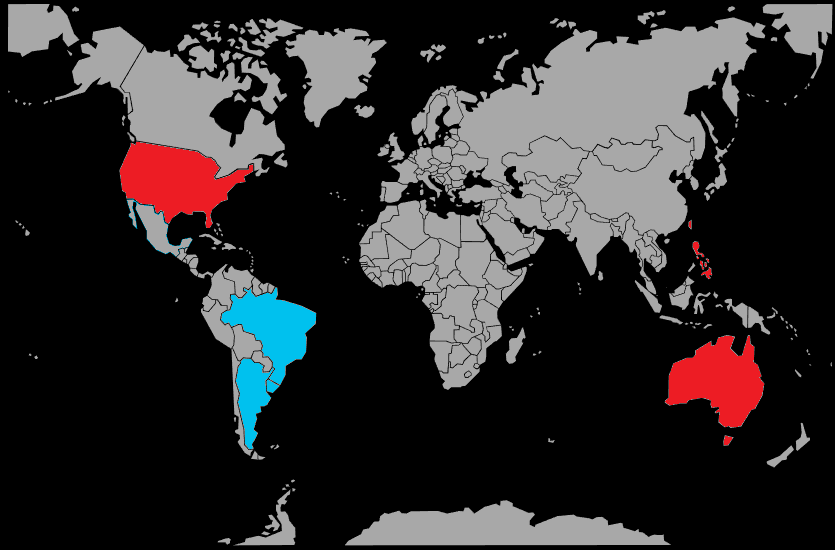

Systématique
- Ordre : Cichliformes
- Famille : Cichlidae
- Genre : Geophagus
- Espèce : Geophagus brasiliensis
Geophagus brasiliensis, souvent appelé géophage perlé du Brésil, est un grand cichlidé sud‑américain fouilleur qui passe une grande partie de son temps à tamiser le substrat à la recherche de nourriture.
Les adultes atteignent couramment 20–25 cm, parfois un peu plus pour les mâles, ce qui impose un volume conséquent et un sol sableux fin non coupant pour permettre le fouissage sans risque de blessure.
L’espèce vit principalement près du fond, où elle fouille le sable et déplace activement le décor; en aquarium, elle creuse des cuvettes et remue en permanence le substrat, ce qui demande un sable fin et non coupant.
Le tempérament est territorial, surtout en période de reproduction, mais la cohabitation est possible avec d’autres grands cichlidés calmes et poissons robustes occupant d’autres niveaux, dans un volume suffisamment spacieux et bien structuré.
Mode : ovipare avec forte protection parentale; selon les souches, le couple adopte un comportement de pondeur sur substrat (avec soins benthiques) ou une incubation buccale, souvent maternelle, après la ponte.
Les parents défendent activement le territoire de reproduction et encadrent les alevins; un bac spécifique ou très spacieux est recommandé pendant cette période pour limiter le stress et les conflits.
Dimorphisme sexuel : les mâles sont plus grands, plus colorés, avec des nageoires impaires plus développées et parfois une bosse nucale marquée; les femelles restent plus petites et plus rondes.
Espérance de vie : généralement de 8 à 10 ans en bonnes conditions, avec un volume adapté et une eau de qualité stable.
L’espèce fréquente des rivières, lagunes et zones calmes de bassins côtiers, sur substrat sableux ou sablo‑vaseux, souvent à proximité de zones boisées offrant racines, branches et blocs rocheux comme refuges.
Répartition
Origine naturelle :
- Bassins côtiers de l’est et du sud du Brésil, dans des rivières se jetant dans l’océan Atlantique.
- Présent également en Uruguay et jusqu’au Río de la Plata en Argentine, avec des populations introduites ailleurs.
On le rencontre dans les tronçons inférieurs de rivières, lagunes et canaux, dans des eaux à courant variable, de lentes à modérées, et à turbidité changeante.
Paramètres de maintenance
Température : 21 à 26 °C.
pH : 6,0 à 7,5, de légèrement acide à neutre.
GH : 5 à 15 °dGH, eau douce à moyennement dure.
Courant : faible à modéré, avec une filtration dimensionnée pour retenir les particules remises en suspension par le fouissage.
Volume conseillé : au minimum 350–400 L pour un couple ou un petit groupe, avec une grande surface au sol et plusieurs centimètres de sable fin.
Régime alimentaire
Régime : omnivore à tendance carnivore; se nourrit surtout d’invertébrés aquatiques, de micro‑organismes et de matière organique filtrés en avalant puis recrachant le sable.
En captivité, il accepte volontiers granulés ou sticks coulants de qualité, complétés par des proies vivantes ou congelées (artémias, vers de vase, daphnies) et une part végétale (légumes pochés, aliments riches en fibres).